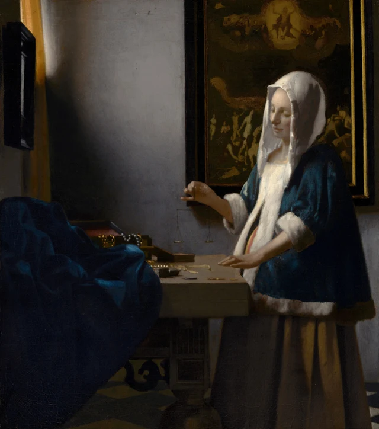
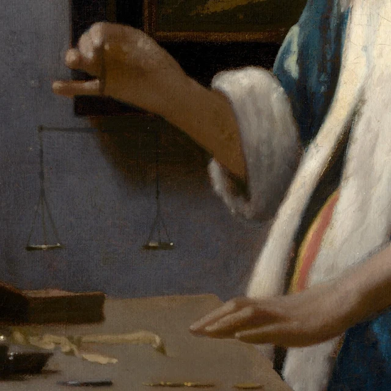
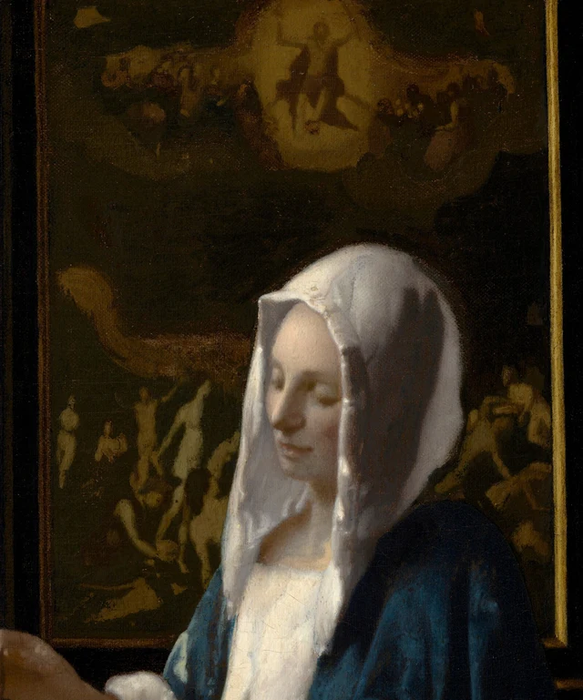
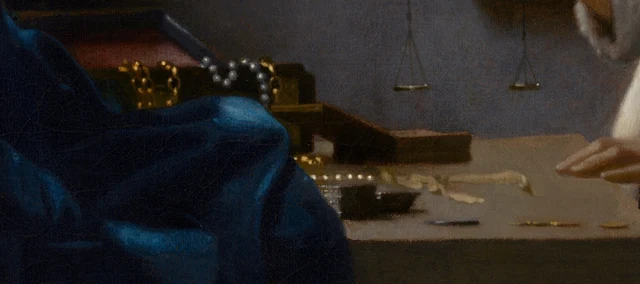

この絵を見るときは、まず天秤を探してみよう。女性の伏せた目をたどると、差し出された右手に行き着く。そこから少し下を見ると、細い糸に吊られた浅い皿が二つあり、その縁に小さな光がきらめいている。見落としても不思議ではないほど小さい。卓上の真珠のほうが目立ち、白い頭巾のほうが明るく、背後の大きな絵のほうが迫力もある。それでも、この二つの小皿は、やがて部屋全体の見え方を変えていく。
皿には、何も載っていない。

本稿では、この絵を次のように読んでみたい。絵は、測るという行為を私たちの目の前に置きながら、その結果は示していない。空の皿、宝飾品、そして背後の審判が一つの画面に置かれることで、私たちの関心は「物はどれほど重いのか」から、「目の前にあるものを、私たちはどう測るのか」へと移っていく。
《天秤を持つ女》が描かれたのは1664年頃。フェルメールは当時、ネーデルラント連邦共和国のデルフトに暮らしていた。17世紀半ばのオランダでは、日常生活を題材にした風俗画が盛んに描かれ、静かな室内は、画家たちが繰り返し取り上げる場面の一つだった。画家たちは題材や構図、技法の面でも互いに刺激を与えていた。フェルメールがこうした題材へ向かい始めるのは1650年代半ばで、限られた空間に人物、物、光を配するようになる。この作品も、その流れのなかにある。卓上の宝飾品と壁の《最後の審判》が日常の空間にともに置かれ、物質的な暮らし、信仰、自省が一つの部屋で出会う。この背景を知ると、彼女の手元の小さな動きが、室内の物や絵とつながって見えてくる。画家の生涯；風俗画の背景
1 まずは部屋に立ち止まってみる
これは小さな絵だ。画面の高さは40 cmに満たない。画面上で拡大して見ていると、そのことを忘れがちになる。原作の大きさを思い浮かべれば、女性の顔はごく小さく、天秤はさらに小さい。そうした細部どうしの関係を見るには、少し近づき、時間をかける必要がある。
左側の窓は一部分だけが見え、その脇には黄色いカーテンが垂れている。そこから入った光が灰色の壁を横切り、女性の額、鼻筋、手に落ちている。彼女は白い毛皮で縁取られた青い短い上着を着て、その下には厚手の黄褐色のスカートをまとっている。画面右側の肩から背中は次第に陰に沈み、顔は白い頭巾に囲まれて浮かび上がる。明るい部分があっても、部屋の隅々まで光が届くわけではない。テーブルの下は暗いままだ。
部屋がどれほど広いのかも、一目ではわからない。手前では大きな濃青の布が左下をふさぎ、テーブルが女性と私たちのあいだを横切っている。床のタイルがのぞくのは、画面下部のわずかな隙間だけだ。こちらの身体はもう近くまで来たように感じるのに、視線は布とテーブルを回り込まなければ彼女の手に届かない。そのため、画面には少し距離が残る。何をしているかは見えるが、その暮らしへ気軽に踏み込めるわけではない。
女性も、こちらを振り向いて説明しようとはしない。片手を上げ、もう片方をテーブルの縁に置き、二つの手のあいだには空間を残している。天秤はその空間に吊られ、テーブルに支えられてはいない。しばらく見ていると、画面でもっとも軽く感じられるのがこの天秤だと気づく。テーブルは重厚で、布は重みに従って垂れ、黒い額縁は幅広い。細い糸と小皿だけが、ほんのわずかな刺激でも揺れそうに見える。
この軽さと重さの違いによって、「釣り合い」は目で感じ取れるものになる。その寓意をまだ理解していなくても、私たちはすでに、ごく小さく、たやすく変わってしまいそうな状態を見つめている。
2 天秤はまだ重さを示していない
この作品はかつて「金を量る女」、また「真珠を量る女」とも呼ばれていた。その名前を聞くだけで、私たちは一連の動作を思い描く。彼女は箱から貴重品を取り出し、皿に載せ、重さを確かめているのだろう、と。しかし、館の記録にある顕微鏡調査は、別の判断を裏づけている。皿の中の明るい点は反射光であり、皿は空なのだ。現在の題名は、彼女が天秤を「持っている」とだけ述べている。そのほうが、目の前の画面に即した余地を残せる。作品研究

彼女はこれから物を量るために、天秤が静まるのを待っているのかもしれない。あるいは、量り終えたばかりなのかもしれない。けれども絵は、その前後を明らかにしていない。これから起こることも、すでに済んだことも、見る側が補った動作だ。フェルメールが残しているのは、目の前のこの一瞬だけである。
もう一度、手を見てみよう。右手の指は握り締められておらず、指先が金属に触れている範囲はごく小さい。その下の細い糸は、壁の灰色にほとんど溶け込んでいる。左手はテーブルの縁に添えられ、何本かの指が伸びている。真珠を皿へ運んでいるわけでも、宝飾品をつかんでいるわけでもない。両手はそれぞれの場所にとどまり、次の動きは描かれずに残されている。
そのことが、卓上の品々に独特の存在感を与える。どれも手の届く場所にある。箱の蓋はすでに開き、真珠の連なりが縁を越え、小さな金属片がテーブルに散らばっている。それでも、今はどれも計量の対象にはなっていない。重さは、本来それらを数値で捉えられる性質の一つだ。ところが今、私たちが先に見るのは、その光沢、形、置かれた場所なのである。
こうして、「彼女は何をしているのか」という問いの答えは、少しだけ遅れてやってくる。その短い間があれば、目は日常の動作を見分けるだけでなく、その動作を取り巻く世界全体へと向かうことができる。
3 彼女の背後にある審判
女性の背後には《最後の審判》が掛かっている。キリスト教の図像では、世界の終わりに人類がキリストの裁きを受ける場面である。画中画の上方では、キリストが光のなかで両腕を上げている。その下では人々が身体をよじり、上を仰ぐ者もいれば、手を伸ばす者もいる。深い暗色に覆われて細部は読み取りにくいが、集まり、うねるような動勢はなお見て取れる。

この主題がわかると、テーブルのそばの天秤を、ただの家庭用品として見るのは難しくなる。物の重さを量ることと、人がどう生きるかを判断することが、互いに響き始めるからだ。貴重な品々は彼女の前にあり、審判の図像は後ろにある。こうして同じ室内に二つの尺度が入り込む。物の価値を測る尺度と、人生が最後にどのように測られるかという尺度である。
この結びつきには、画面上にはっきりした根拠がある。ただし、解釈は一つに定まらない。研究では、彼女をこの世の富に引きつけられる警告的な人物と見る読み方も、節度を心得、慎重に物事を測れる人と見る読み方も示されてきた。ナショナル・ギャラリー・オブ・アートの解説は後者に近く、この絵を内省や節度ある暮らしに結びつけている。どちらの読みも宗教画の重要性を認めており、違うのは、女性と宝飾品の関係をどう理解するかだ。NGAの作品解説；学術カタログ
本稿では、測るという行為を見せながら、女性を貪欲や節制の単純な実例にしてしまわないところに、この絵の力があると考える。彼女は宝飾品をこちらに見せびらかしてもいなければ、欲望をあらわにした表情もしていない。けれども貴重な品々は、変わらずすぐ手元にある。伏せた目は注意を天秤に集め、宝飾品と《最後の審判》は、その行為の意味を両側へと広げる。自省の気配は、こうした関係から生まれる。一つの表情に、彼女の徳を宣言させるわけではない。
画中画と人物の関係は、出来合いの道徳的な判定よりも、長く見つめるに値する。上のキリストは人々に向き合い、テーブル脇の女性はごく小さな皿を見ている。後方では多くの身体が伸び、ねじれ、前方では一組の手だけがかすかな動きを保っている。さらに女性の身体が宗教画の一部を隠すため、その壮大な場面は、彼女の周りからしか私たちの目に現れない。
「富に執着してはいけない」という教訓だけを覚えて帰るなら、こうした配置を見落とすことになる。宗教的な意味は、絵の外に独立して掲げられているのではない。大小の違い、遮られること、動きの速さや遅さを通じて、日常の部屋に入り込んでいる。今日の鑑賞者が同じ信仰を持っていなくても、女性のいる世界が、卓上の、手に取って値を付けられるものだけで成り立っているわけではないことは見て取れる。
4 光が宝飾品を描き出す
ここで、視線をテーブルへ戻そう。
宝飾品は、一様に照らされてはいない。奥の箱に入った真珠は、白に近いほど明るい粒もあれば、灰色の丸い影だけになった粒もある。金の鎖は見え隠れし、暗がりから小さな黄色い光点がところどころ浮かぶ。手前にも、テーブルの面に沿うように小さな光点が並ぶ。これらが青い布と密集し、重なり合っているため、一つずつ数えることは難しい。

拡大すると、真珠の光は必ずしも、輪郭の整った小さな丸ではない。ぼやけたものもあれば、暗い部分とつながっているものもある。ところが全図の大きさに戻すと、それらの点はすぐに一本の真珠の連なりとして読める。私たちの目は、ばらばらの絵具の跡を一つの物へと結び、その丸み、硬さ、滑らかさまで補っている。
青い布は、別のやり方で描かれている。鋭い小さな光点には、あまり頼らない。大きな濃青の面のあいだに、折れた面に沿って淡い青がゆっくり浮かび、ひだの奥へ入ると再び暗くなる。その起伏を目でたどると、布の厚みと重く垂れる感じが伝わる。右側の上着にも青の濃淡があるが、白い毛皮の縁取りがそれを囲んでいるので、手前の布のかたまりより輪郭を見分けやすい。同じ青が、画面のなかで違う働きをしているのだ。
もっとも見過ごしやすいのは、灰色の壁だ。画面のかなりの部分を占め、何もないように見えるが、その色は一様ではない。窓に近いところが明るく、下へ、左へ進むにつれて暗くなる。天秤の細い吊り糸はちょうどこの壁を背にしているから、後ろの絵の群衆に紛れずに見える。一方、頭巾は暗い背景によって明るく浮かび上がる。一つは明るいところを背に、もう一つは暗いところを背にして姿を現す。両者のあいだで、光の関係がひそかに入れ替わっている。
ここでいったん立ち止まることは、絵を見るうえで役に立つ。「真珠」「服」「壁」と見分けたあとも、それらがどのように真珠、服、壁として描き出されているかを見続けるのだ。材質はそれぞれ違うが、最終的にはどれも、一枚のカンヴァスの上の絵具によって示されている。フェルメールはその違いを明瞭に感じさせながら、すべてを同じ光のなかに置いている。
5 静けさはどのように描かれているか
画面が安定しているからといって、どこも左右対称なわけではない。人物は右に寄り、手前の青い布は左下に重く置かれ、大きな絵は右上を占める。その一方で、左上には広い灰色の壁が残る。左右で置かれた物も、視覚的な重さも異なる。視線はそれらのあいだを行き来し、やがて差し出された手と小さな天秤へ戻ってくることが多い。
背景の額縁の下辺にも注目してみよう。女性の左側に見える部分は、彼女の背後を挟んで右側に見える部分より、少し高い。その小さなずれによって、皿の近くには壁がわずかに多く現れ、天秤を見分ける余地が生まれている。初めからこの不連続に気づくとは限らない。それでも、天秤の周りにちょうどよい空間があることは感じ取れる。NGAによる構図の解説
技術調査からは、天秤の位置が当初からこのとおりだったわけではないこともわかっている。赤外線画像によると、フェルメールは初め、天秤を画面に対して斜めの向きに描き、その後、こちらにより正面を向け、二つの皿が釣り合って見える配置へと変えている。NGAの技術調査紹介 目の前の落ち着いた佇まいは、修正を経て生まれた。完成した絵は、その過程を表に出してはいない。しかし、これほど小さな道具も、画家が配置を考え直す対象だったことがわかる。
では、この女性は誰なのか。画面だけでは十分な答えが得られない。ふくらんだ腹部の輪郭から妊娠を連想する人は多いが、ゆったりした服の形を考えれば、断定はできない。特定の家族の一人だと決めたり、そこから母性をめぐる物語を組み立てたりするには、絵の外に証拠を求める必要がある。学術カタログ
全図に戻ると、最初には見落としていた多くのものが見えてくる。重い物のあいだに軽い物が吊られ、密集した群衆の手前には小さな動作のための余地があり、光は材質ごとに異なる跡を残している。二つの空の皿によって、計量の結果はひとまず示されない。背後の《最後の審判》は、その一瞬を、さらに広く、重みのある問いへと結びつける。
本稿が強調したいのは、この絵の静けさには重みがあるということだ。宝飾品の誘惑、審判の圧力、手のかすかな動きが一緒に置かれ、答えに先立って、測るという過程が私たちの視線を占める。もう一度彼女の手を見れば、空の皿が部屋全体の支点になっている。
もう少し深く読む SAEでもう一度見る
ここからは、SAE（Self-as-an-End）美学を借りて、さらに二つの方向から見てみよう。ここまでの鑑賞は、この節を読まなくても成り立つ。
SAEは、「私はこれに心を動かされた」ということと、「ここには、ほかの人とも確かめ合えるどのような根拠があるのか」ということを、分けて問い直す。「射線」は、美が成り立つ仕方を見るための異なる方向と考えればよく、作品に順位を付けるためのものではない。この絵では、知覚から始めるのがもっとも適している。私たちはどんな関係を見ているからこそ、この絵を静かで、安定していて、繊細だと言うのだろうか。SAE美学の総論；知覚の美
小さな比較をしてみよう。まず全図を見て、次に図2の天秤の部分だけを見る。部分図では空の皿が見分けやすく、指と細い糸もよくわかる。けれども青い布、黒い額縁、灰色の壁の大半は失われ、全図にあった軽さと重さの関係も変わってしまう。そこで問えるのは、宙にとどまっている感覚を生むのが「天秤」という物そのものなのか、それとも、周囲の大きな形、明暗、間隔との関係なのか、ということだ。ここで理論が役立つとすれば、「趣がある」という漠然とした感想を、画面に戻って確かめられる問いへ変える点にある。
もう一つの方向は、見ることに伴う記憶と期待である。何かを量る場面を見たことのある人なら、卓上の宝飾品を見て、皿にはすでに量る物が載っていると思うかもしれない。空の皿をよく見れば、その判断は改める必要がある。《最後の審判》に気づくことも、何気ない日常の動作に見えたものの理解を変えるかもしれない。私たちは以前の経験を携えて絵を見ると同時に、絵の細部によってその経験に修正を加えていく。その変化が起こるのか、どのように起こるのかは、自分自身の鑑賞のなかで確かめられる。認知の美
これらは作品と鑑賞の過程を現代の視点から分析するものであり、それを根拠に、人物や画家の落ち着きを、SAEのいう自己立法、「不疑」、「双方向の不疑」と同一視することはできない。不疑の美
「静かだ」という全体の印象にも、問いを向けられる。背後のうねるような群衆によって、その静けさには圧力も含まれているのではないか。穏やかさだけで作品を説明するなら、なぜこの緊張があるのかも説明する必要がある。こうして、話し合いには具体的な足場ができる。同じ細部を一緒に確認してから、それがなぜ異なる感じ方へつながるのかを話せばよい。感じ方の違いそのものに、正誤を付ける必要はない。理論が役立つのなら、話し合いをより具体的にし、もう一度見ようという気持ちを促してくれるはずだ。
画像と資料について
本稿の視覚的な記述は、ナショナル・ギャラリー・オブ・アートが提供する3620×4096ピクセルの画像と、その部分を観察したことに基づく。全図はダウンロードしたファイルのままで、図2から図4は切り抜きのみを行った。色調補正、修復、描き足し、生成による内容の追加はしていない。デジタル複製は細部を見る助けになるが、画面表示や拡大率は、原作を鑑賞する条件とは異なる。
館の画像にはCC0のオープンアクセス方針が適用されるが、画像の公開ライセンスは、館の研究記事の文章を自由に転載できるという意味ではない。本稿は独自の細読を中心に据え、史実と議論のある点については、リンクした所蔵作品情報、学術カタログ、技術調査に拠っている。本文の解釈は美術館の支持や承認を示すものではない。同じパッケージ内の参考資料と画像クレジットも参照されたい。